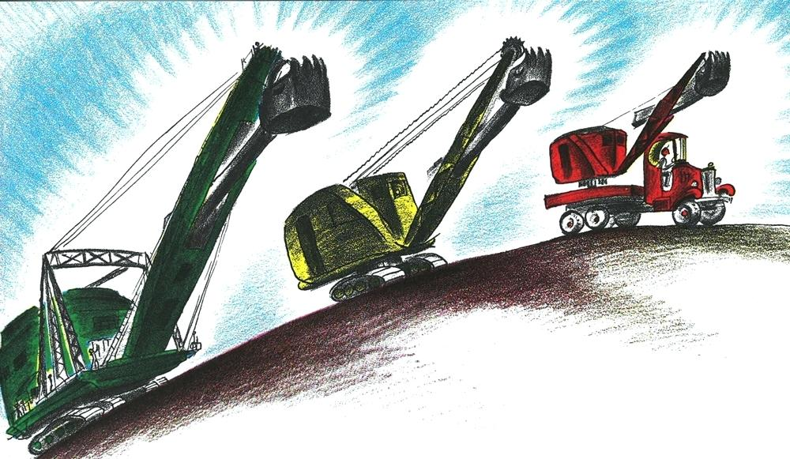

1st event: Mike Mulligan and Mary Anne were an unstoppable duo. Together they digged thousands of projects and were a highly accomplished team!
2nd: They digged canals through islands, roads through mountains, holes for skyscrapers, and best of all...cellars for houses!
3rd: Mike mulligan always believed that Mary Anne was capable of digging what 100 men could dig in one week in just 1 day… but he never quite knew if it was true
4th: Then one day new types of shovels came around...Diesel shovels, Electric Shovels, and Gas shovels... They were much quicker then steam shovels like Mary Anne
5th: Soon everyone threw out their steam shovels and got the new better types. There was no use, but still Mike Mulligan loved Mary Anne so much, he could never give her up.
6th: Mike Mulligan heard of work in the countryside far away from where they had begged before. Should the pair venture out to find smaller jobs?
No: With no work, Mike and Mary became very sad. Their relationship became bitter and they got a divorce. Mike now is an alcoholic and Mary is dead.
Yes: Mary And Mike venture into the countryside where they find the town of Popperville. They learn the town is in need of a new cellar for the city hall. Because of how desperate Mike and Mary are, they promise the town mayor that they can dig the cellar in just one day! If they can’t, they will do it for free.
If yes to previous: The mayor Henry B Swap is faced with a dilemma. Should he use the newer shovels or take up the bet with Mike and Mary?
No: Mike and Mary are forced to go back to the city after finding no work. Go back to countryside decision…
Yes: Swapp realizes even if they fail, only part of the cellar will need to be dug compared to all of it. He smiles evilly and agrees to the deal.
If yes to previous: The next day Mike and Mary wake up at the crack of dawn and start digging the cellar in Popperville. Very early on a little boy comes by to watch the team dig. Mike asks the boy to stay watch because when people watch, they work better and faster.
Next event: Should the kid stay to watch?
Yes: Mike and Mary start to make great time
No: Mike and Mary don't make good enough time. They don't complete the job and end up doing the work for free. Mike and Mary still have no money or jobs
If yes to previous: The boy and the team attract more people to watch and soon the whole town is watching! School is let out early and the men and women leave their houses to come watch. Mike and Mary are making great time.
Next event: Mike and Marry finish the hole just as the sun is setting! The town is cheering but they realize something very important… How are mike and Mary going to get out of the hole! They never made an exit route because they were digging too fast
Next event: No one can find a solution to what to do. Just before Swapp is about to not pay Mike and Mary the boy thinks of a plan. Should he share the plan?
No: No plans are heard and Mike and Mary aren't paid. They leave popperville empty handed and sad.
Yes: The boy proposes a plan for the cellar to be built on top of Mary! She would work as the town hall furnace and Mike could of be the janitor.
If yes to the event: Everyone in the town is thrilled with this idea. Should mike and Mary agree to it?
No: Mike and Mary figure out no way out of the hole as now no one wants to help. They both die in the hole and their bodies are filled over with cement.
Yes: Mike and Mary agree and live happily ever after w
I really like the illustrations from this book. I only chose this one because I remember this book from my childhood for being so beautiful. For the alternate endings I would illustrate them myself in that style.
I really like this interactice site for this burger joint becuase it scrolls without changing the page. I also like how when you click on a button the image changes rather than the whole page. This could be a simple way to incorperate a whole story. The enemey is an interactive site that allows the viewers to be recorded and from what country. Its kind of a game as what I could understand. I think it would be cool to make it more viewer-personal and this is one way that you could do it. This site for the game has two aspects which I really like. Its intention is in creating chaos for the viewer. First of all as you scroll images take up different spaces and feels very well connected. Also there is ae video playing in the background that changes as you move through the site. This seems hard to do but I really want to incorperate something like this. This is also a scrolling site I really like because it has a layout I would like in mine. The intentions is to make a more persoanl experience for understanding the situation in Haiti to make them feel something. I want to incorperate good sounds like they do in the website. My target audience are people in my age demographic who read the book who also have a sense of humor. The alternative endings are really inappropriate and funny and I think immature kids of my age range would appreciate them. There are two things I want to convey through this site. Firstly I’ve always wanted to work on interactivity in website design. Its some of the coolest mediums to me and I want to show that interest through this website. That'd mean working pretty hard on this one to make it super fucking cool. I also want to still maintain my design style in simple to understand way. I’ve shown people I can create a serious theme to a website, now I want to show them I can make something that isn't distracting, but yet pleasing, to the viewers. I am thinking hovering animations or movable parts as well as how the story takes you to the next screen. It will either involve a click or heavy motion graphics that takes you into a new part of the site.
2 examples

4 websites
Intention